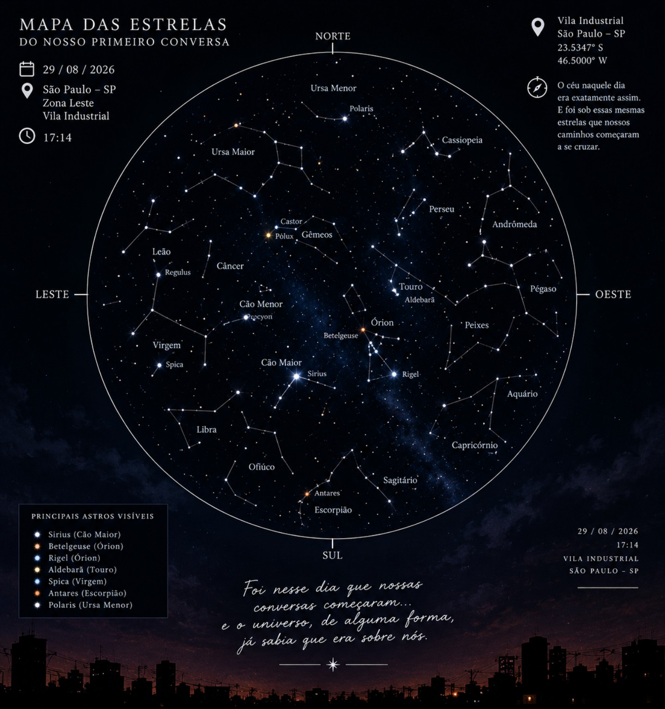
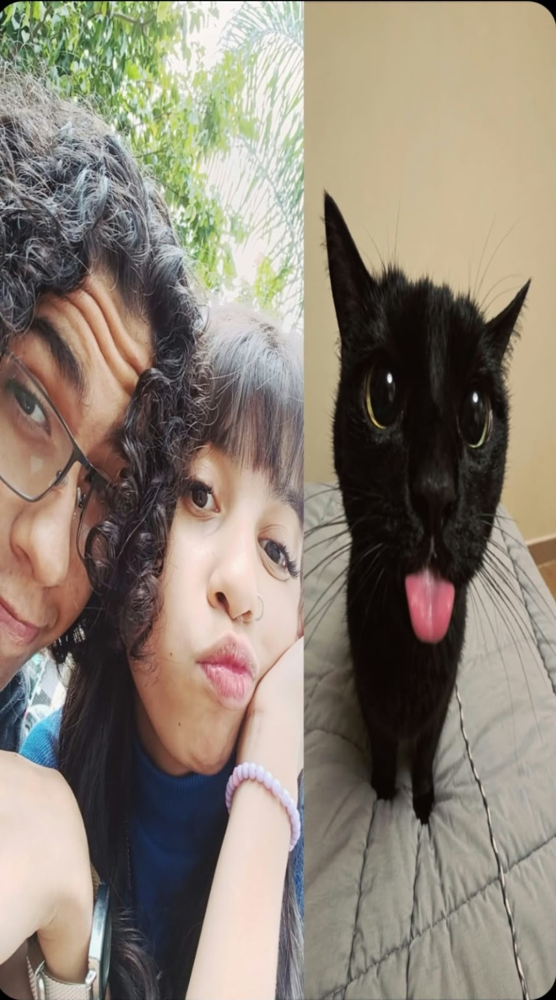
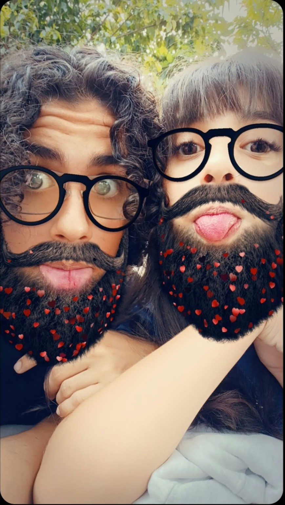
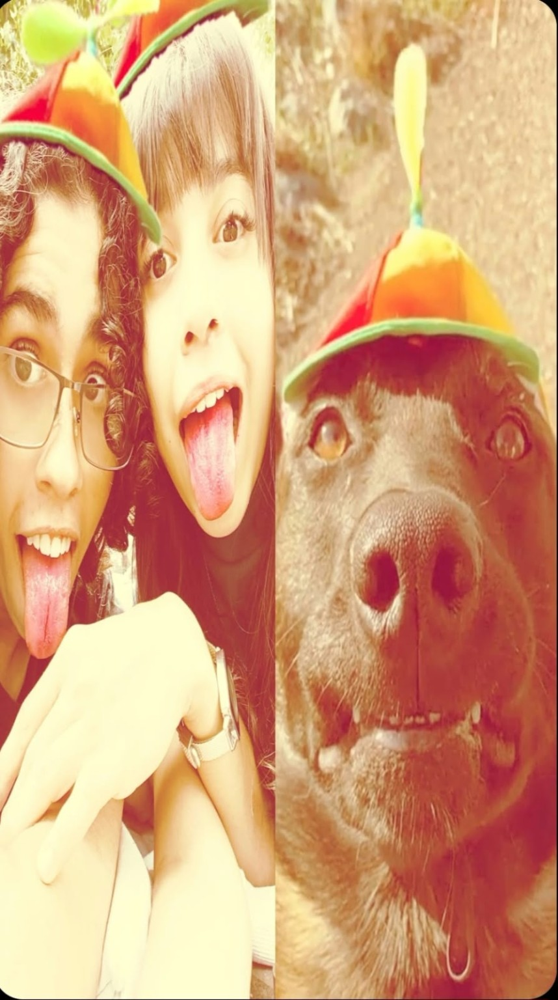
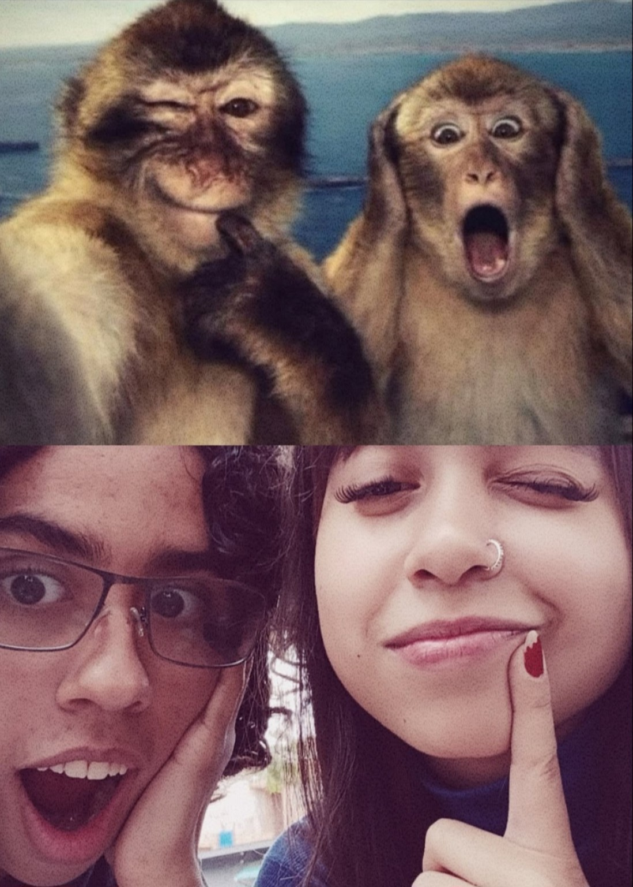
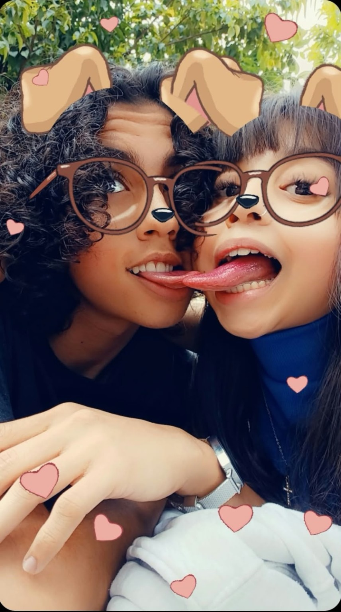
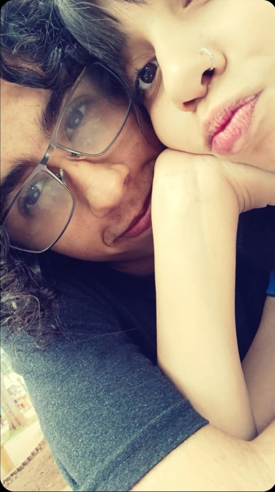
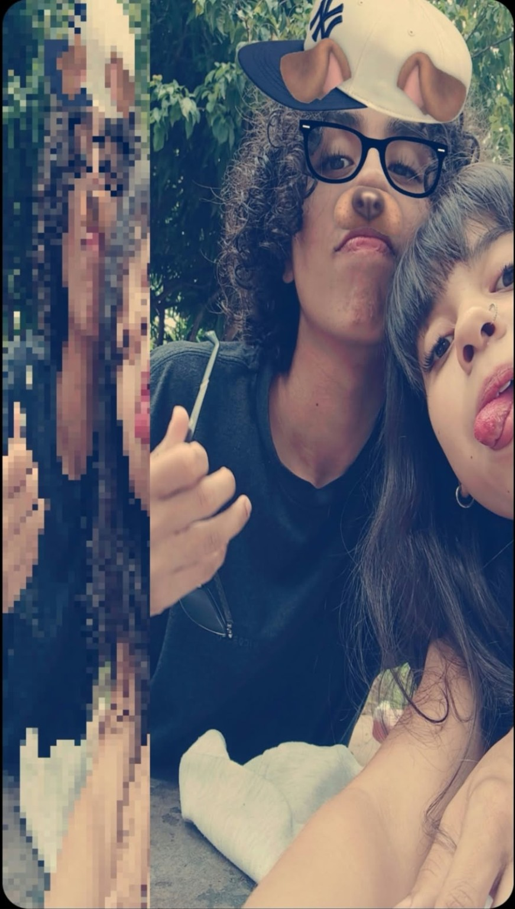

Eu preparei uma coisa para você.
O dia em que Thyna e Vinz começaram a conversar.
Para a mulher que eu amo,
para a minha princesa.
Talvez eu comece com um “oi” KKKKKK.
Como você sabe, eu tenho dificuldade em iniciar cartas, mas quando é sobre você, eu estou disposto a enfrentar as minhas dificuldades a qualquer custo.
Amar, dizer que ama alguém, nunca pensei que diria isso com tanta certeza a alguém, mas me intriga que, para você, eu não tenho essa dúvida, eu não tenho esse questionamento.
Eu amo você. Amo com todas as minhas forças.
Eu vivo você, adoro te chamar de minha princesa e você me retribuir com um “meu príncipe”. Amo a forma como você se preocupa com as pessoas, amo o jeito que você me trata e não tenho vergonha nenhuma de gritar para o mundo inteiro que eu te quero na minha vida.
Você é uma das pessoas mais lindas, fortes, esforçadas, encantadoras, engraçadas e especiais que eu poderia ter ao meu lado.
Mas, como diria meu mano Dfidelis: “você consegue me fazer mostrar o meu lado mais romântico junto com o mais...” KKKKKKK. Esse cara sabia o que estava escrevendo, mas eu não o julgo. Não tenho por quê.
Eu estou aqui também não só para te elogiar, mas para reforçar os meus votos, para reforçar as minhas promessas.
Lembra do P.A.E.Q.E.? É o símbolo do nosso amor, e eu estou disposto a sempre te lembrar disso.
Quero acolher você e confortar você diante das suas inseguranças e dos seus medos. Nunca julgá-los ou diminuí-los. Justamente o contrário: quero entender e mostrar que, independente de tudo, eu estarei aqui.
Quero ser o cara em quem você possa confiar os seus problemas. Quero estar por você, assim como você esteve por mim.
Aliás, desde o primeiro dia em que começamos a conversar eu já sabia que minha vida jamais seria a mesma.
Cada momento ao seu lado é uma bênção. Cada sorriso seu ilumina o meu mundo. Você é meu porto seguro, minha paz e também uma das minhas maiores aventuras.
Eu te amo mais do que as palavras conseguem expressar.
Mais uma vez não sabendo me despedir KAKAKAKAKAKA. Já está virando um costume. Sinto que falei demais, mas quando o assunto é a minha princesa, eu não me importo de falar pra caralho.
Eu te adoro.
Eu te vivo.
Eu te amo.
O mapa estelar do dia em que nossas conversas começaram.

Minha Thyna, antes mesmo do nosso primeiro encontro, antes daquele açaí, dos abraços que eu tanto queria dar em você e de todos os momentos que começamos a construir juntos, existiu um dia que tornou tudo isso possível: 29 de agosto de 2026, às 17h14.
Esse mapa representa o céu daquela data, o dia em que nossas conversas começaram e em que, sem que pudéssemos imaginar tudo o que viria depois, demos o primeiro passo para construir a nossa história. Naquele instante, talvez nenhum de nós soubesse o quanto uma simples conversa poderia significar no futuro. Nós ainda tínhamos tantas coisas para descobrir um sobre o outro, tantas histórias para contar e tantos momentos que sequer imaginávamos que viveríamos.
Eu não sei se o universo realmente preparou alguma coisa para nós, minha princesa, mas sei que, entre tantas pessoas, foi você quem se tornou tão importante para mim. E isso, por si só, já é algo que eu considero extraordinário.
Se um dia você me perguntar quando a nossa história começou, eu vou poder voltar a esta data e dizer: foi aqui. Foi nesse dia que começaram as conversas que me aproximaram de você, da garota que eu viria a amar tanto e com quem eu ainda quero construir tantas lembranças.
Talvez as estrelas não saibam o nosso nome, talvez esse céu não tenha sido desenhado especialmente para nós, mas eu sei o significado que essa data tem na nossa história. E, para mim, isso já é suficiente para tornar esse mapa especial.
29 de agosto de 2026, às 17h14. O dia em que nossas conversas começaram, o primeiro capítulo de uma história que eu quero continuar escrevendo com você.
Algumas conexões começam antes mesmo de entendermos o quanto elas vão significar.
Minha Thyna, você já parou para pensar que, antes de nos conhecermos, éramos apenas duas pessoas vivendo nossas próprias vidas, sem imaginar que, em algum momento, nossas histórias se encontrariam? Eu gosto de pensar na ideia do fio vermelho do destino, aquele fio invisível que conecta duas pessoas que, independentemente do tempo, da distância ou dos caminhos que precisem percorrer, acabam encontrando uma à outra.
E, quando penso em nós dois, gosto de imaginar que esse fio começou a se desenrolar no dia 29 de agosto de 2026, às 17h14, quando começamos a conversar. Talvez, naquele instante, não soubéssemos o que estávamos prestes a construir, mas nossas palavras começaram a aproximar duas vidas que, até então, seguiam caminhos diferentes. Vieram as conversas, as descobertas, os sentimentos e, depois de quase dois meses, o nosso primeiro encontro. A cada novo momento, eu encontrava mais um motivo para agradecer por ter conhecido você.
Eu não sei se o destino realmente existe da maneira como imaginamos, minha princesa, mas gosto de pensar que, se existisse um fio ligando pessoas destinadas a marcar a vida umas das outras, eu reconheceria o meu pela maneira como ele me conduziu até você. Não porque acredito que tudo precise estar escrito antes de acontecer, mas porque, entre tantas possibilidades, nós nos conhecemos, escolhemos continuar conversando e construímos algo que hoje significa tanto para mim.
E sabe o que eu acho mais bonito nisso tudo? É que não quero depender apenas do destino para continuar ao seu lado. Quero que, além de qualquer fio imaginário, sejam as nossas escolhas, o nosso carinho, o respeito e o amor que mantenham nossos caminhos próximos. Quero continuar escolhendo você, mesmo quando a vida nos apresentar caminhos difíceis, porque amar você não é apenas acreditar que nossos caminhos se cruzaram por algum motivo, mas fazer com que cada passo que damos juntos tenha significado.
Se o fio vermelho do destino realmente existe, eu gosto de imaginar que ele nos conectou naquele primeiro dia. E, se ele não existe, então que coisa extraordinária foi a vida ter permitido que eu encontrasse você.
Thyna e Vinz. Duas histórias, dois caminhos e um encontro que se tornou o começo de algo inesquecível.
E, se eu pudesse pedir alguma coisa ao universo, não pediria que ele decidisse o nosso futuro por nós. Pediria apenas que nos desse a oportunidade de continuar construindo esse futuro juntos, um dia de cada vez.
29.08.2026 · 17h14
Thyna & Vinz
O nosso primeiro encontro.
Minha princesa, KKKKKKKKKKKKKKKKKK, por onde eu começo? Nosso primeiro encontro aconteceu depois de quase dois meses conversando, EU SEI QUE DEMOROU, MAS NÓS TIVEMOS NOSSOS MOTIVOS KKKKKKKKK. E, sinceramente, depois de tudo, eu acho que aquele momento valeu cada segundo de espera.
Porque, quando chegou a hora de finalmente encontrar você, eu simplesmente me deparei com a garota mais linda e especial de todo o planeta inteiro. E não, minha linda, eu não estou exagerando. Eu simplesmente não conseguia tirar os olhos de você, era como se toda a minha atenção tivesse decidido ficar exclusivamente naquela garota que estava na minha frente.
Eu queria beijar você TIPO MUUUUIIITO, E ABRAÇAR VOCÊ MAIS AINDA 😭😭😭😭😭. Depois de tanto tempo conversando, de conhecer cada vez mais a pessoa incrível que você era por mensagens, finalmente eu podia estar ali, pertinho de você, vivendo tudo aquilo de verdade.
E então eu comprei o nosso açaí, nós tomamos juntos e aconteceu uma das coisas mais simples e, ao mesmo tempo, mais especiais daquele dia: eu tirei uma sujeirinha do seu rosto com um beijo. E CARA, EU SIMPLESMENTE AMEI FAZER AQUILO KKKKKKKKKKKKKKK. É SÉRIO, EU AMEI.
Talvez para outra pessoa fosse só um gesto pequeno, uma coisa boba, mas, para mim, foi uma oportunidade de demonstrar carinho por você de uma maneira que eu nunca vou esquecer. Porque era você, minha princesa. Era a garota que eu queria abraçar, beijar, cuidar e ter pertinho de mim.
Eu queria guardar cada segundo daquele encontro, cada detalhe seu, cada instante em que pude olhar para você e pensar que, finalmente, estávamos ali, juntos, depois de tantas conversas. E, se eu pudesse voltar naquele dia, eu voltaria sem pensar duas vezes, só para viver tudo novamente, sentir aquele nervosismo bom, olhar para você mais uma vez e ter a oportunidade de abraçar você por muito mais tempo.
Nosso primeiro encontro pode ter começado com um simples açaí, mas, para mim, ele se tornou muito mais do que isso: foi uma lembrança que eu quero levar comigo por muito tempo, porque foi um dos momentos em que pude sentir de pertinho a felicidade de ter você na minha vida.
Eu te adoro.
Eu te vivo.
Eu te amo.
Uma carta que ainda vai crescer.
Minha Thyna, eu ainda quero escrever muito mais sobre nós, sobre as coisas que vivemos e sobre os momentos que ainda vamos guardar. Por enquanto, deixo este espaço reservado para mais uma carta, que vai receber nossas próximas lembranças e tudo aquilo que eu ainda quero dizer a você.
Porque, quando o assunto é você, minha princesa, sempre parece existir mais alguma coisa que eu quero contar, mais algum sentimento que eu quero explicar e mais uma maneira de lembrar o quanto você é importante para mim.
Ainda há tanto de nós para escrever.
Dê o play no Spotify e continue a surpresa com a nossa música.
Pequenos registros de momentos que merecem ficar guardados.







Um símbolo que talvez pareça pequeno para quem olha de fora, mas que carrega uma parte enorme da nossa história.
Tem coisas que talvez sejam coincidência...
Mas eu gosto de pensar que algumas delas acontecem para lembrar a gente de alguém.
Sempre que eu vejo horas iguais, eu penso em você.
Alguns momentos ficam guardados para sempre.
E eu quero guardar os nossos com todo o carinho do mundo.
Toque na chama.
Faça um pedido.
O meu já aconteceu quando conheci você.
Obrigado por ter aparecido na minha vida, Thyna.
Espero que esse seja apenas o primeiro de muitos meses que ainda vamos contar juntos.
29.08.2026
O dia em que tudo começou.
29.09.2026
O nosso primeiro mês.
Para a minha Thyna.
Para a mulher que eu amo.
Para a minha princesa.
Eu te adoro.
Eu te vivo.
Eu te amo.